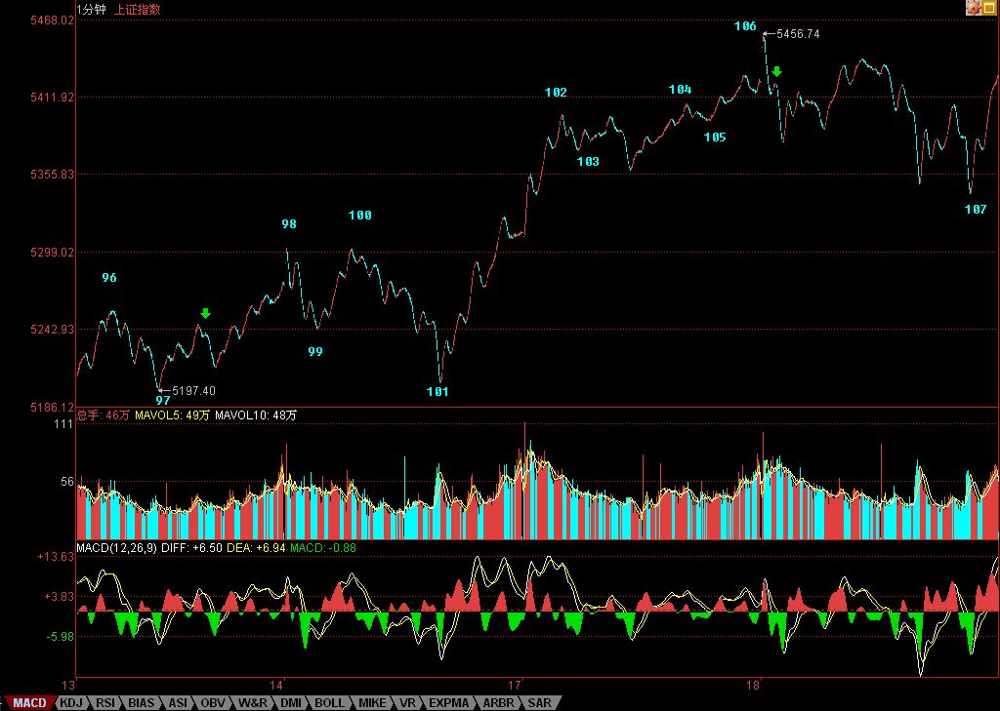
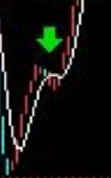

(2007-09-17 22:57:16)
请首先看一个回帖：
快乐vs菜虫 2007-09-17 17:24:59
缠姐，请问图一是几段，图二是几段？？？【韶山映山红】这两个图的区别是有没有封闭特征序列的缺口，线段破坏已经不要求封闭缺口了。问题是，都是第二种情况，下跌的第二笔包含了下跌的第一笔，没有形成底分型。】
=======
[匿名] 赚到了 2007-09-17 17:36:23
如果５＝７或者５低于７，都是一段，【韶山映山红】这种情况，3下跌后，虽然下跌力量在努力，两次打击越来越低，直到6创新低，但不足以形成压制，导致7等于甚至高于5，反弹的力量在两次打击之后就恢复控制局面，这样的力度对比，分析的时候就忽略下跌力量的作用，不给下跌专门划分一个段。】

如果５高于７，都是３段【韶山映山红】这种情况，3下跌后，下跌力量虽然不足以第一次就形成笔破坏，但是足以压制反弹力量，两次打击越来越低，直到6创新低，而且能够压制反弹力量，使得反弹高点3、5、7不断下降，直到下跌力量的衰竭，有一个诱敌深入、消耗有生力量的意思。】

下午，本ID回答问题时，一边电话不断，所以给出的答案是不大完整的，因为本ID按图中看出的7不低于5来回答的。晚上回来，发现已经有人把正确答案完整写出，所以必须给一朵大红花。
这两种情况，都属于线段破坏的第二种情况，所以必须考虑高点下来走势的特征序列，【韶山映山红】“高点下来走势的特征序列”就是指第二特征序列。】而且必须考虑包含关系，【韶山映山红】按照后期的规则，第二特征序列所有的元素都要参与包含处理。】所以上面这位网友的回答才是完整的。
另外，有人提到71课里最后一个图，那个图显然是错的，

问题就在于与这里类似的，把7的位置画高了，应该类似7的位置比类似5的位置低才对，那才是三段，当时画的时候，没特别注意。所以这里必须指出。【韶山映山红】早期的线段是次级别走势类型，破坏规则就是跌破前高，所以那个时候的这个图并没有什么错。到后期线段规则变成了特征序列的分型判断，而且第二种情况的第二特征序列所有元素都要参与包含处理，也就使得这个图不再符合规则了。】

【韶山映山红】这里的问题在于包含问题。3-4-5-6对前一线段的破坏属于第二种情况，特征序列的顶分型中，第一和第二元素（1-2和3-4）间存在特征序列的缺口，第二特征序列，如果7不低于5，6-7就包含4-5了，特征序列没有出现底分型，则3-4-5-6对前一线段的破坏不成立。注意：这里的规则，不是后线段破坏前线段就证明前线段成立，也就是说，不是6-7-8-9破坏3-4-5-6就判定3-4-5-6成立，而是第二特征序列所有元素都要参与包含处理，底分型成立才行，这样一来，7高于5就使得3-4-5-6反而不成立了。由此可以得知，第二种情况的3-4-5-6是否成立，不取决于她对0-1-2-3的破坏，而取决于后线段对她的破坏，后线段对她的破坏越强烈，她反而越不成立了。 6-7-8-9对3-4-5-6的破坏属于第一种情况，9高于7使破坏成立。】
所以，一切根据定义来，把定义搞清楚了，一切都好办，就是本ID画错了，你也能一眼看出来。
【韶山映山红】开篇的两个例图和这张图一样，有一个共同的问题，就是9突破了3，这样，4-5、6-7、8-9构成底分型的时候，8-9突破3回到了原来的向上线段0-1-2-3的区域，还能不能算是3-4-5-6-7-8线段的特征序列？在69课笔记的问答部分，2007-8-13 21:56有实例专门说这个问题，按照那个实例的说法，8-9回到了0-1-2-3线段的走势中，不算第二特征序列。69课笔记的实例是上证指数1分钟线的实盘，这里两个是白纸画图。这个前后矛盾，是缠师失误了？还是规则就这样进化了？缠师没有明确的说这个问题，可以视为默认了，因为缠师后面自己也是这样划分的。】
【韶山映山红】石猴以81课的配图去质疑69课那个实例分析，缠师确实没有说清楚这个问题，详见69课笔记。缠师自己也说过，依法不依人，所以这个问题的正确处理需要讲出理由来。当我们把注意力放到分型上面的时候，我们追究的是分型是否合理，所以就出现了舍本求末的现象。那么，第二种情况应该追究的是什么呢？就是第三线段对第二线段的破坏，这才是本。显然，69课的32-33段的情况，和81课示意图的情况，以及71课草图的情况，都是第三线段破坏了第二线段，从而证明了第二线段对第一线段破坏的成立。所以在这个规则上，缠师应该是默认、默许了这个进化。】

【韶山映山红】缠师后来自己也使用了默认的这个规则。】
另外，提一个问题，今天走势的划分，有一些特别的地方，本ID下午说的，有点问题，主要出在，10:17的低点5386.47比前一分钟的5386.39点高，所以顶分型的顶在10:17那时间，所以那里就是一笔，【韶山映山红】这里没有沿用取整的规则，而是计较这0.08的差别了。因为在非包含处理的时候要使用绝对相等。】但图形上粗略看顶在16分那点，下午写东西太快，没有仔细去比较，晚上回来，仔细对比一下数据，才发现那里应该构成一笔，所以整个划分就要有点改变，也就是今天形成1分钟中枢了，该中枢前面一段很简单，关键是第二、三段，究竟怎么划的，能正确划出的，对线段划分也就有点及格了，明天下午再公布答案，可以对比一下。
【韶山映山红】做一下事发现场回顾和案情分析。在下图A点处，由于K线低点的细微差别，缠师误判了包含关系，把现在标注的102-103线段误判为笔，这样估计缠师把103标在了C点。这样，后面的104、105的线段就不成立了，这一天就没有形成1分钟中枢。而103的位置提前到现在这个位置，104、105的线段就成立了，这一天就形成了1分钟中枢。可见，笔的划分也很重要。有时候会影响更大的研判。】
各位以后要吸取本ID下午失误的教训，对那些只有5、6根K线的，一定要看好其中是否有包含关系，这样才不会一时大意，这是最容易出毛病的地方。
有人可能要问，难道就那0.08的差别就可以影响整个大盘？
这有什么奇怪的，如果你知道某些物理学的理论，就知道，在那些理论看来，我们的世界之所以这样，就是因为一些极其微小的差别造成了，没有那些差别，世界一定不是这个样子了。
另外，请注意，一定要用同一种软件，这样，等于测量的精确度或误差是基本一致的，就保持整个划分是在同一误差或精确的基础上。【韶山映山红】消除某些系统误差的干扰。】
好了，闲话不说，进入新课程。
为什么要研究分型、走势类型等东西，其哲学基础是什么？【韶山映山红】市场哲学的数学原理。】
这就是人的贪嗔痴疑慢。
因为人的贪嗔痴疑慢都是一样的，只是跟随时间、环境大小不一，所以，就显示出自相似性。
而走势是所有人贪嗔痴疑的合力结果，反映在走势中，就使得走势显示出自相似性。
分型、走势类型的本质就是自相似性，同样，走势必完美的本质也就是自相似性。
分型，在1分钟级别是这样的结构，在年线上也是这样的结构，在不同的级别上，级别不同，但结构是一样的，这就是自相似性。
同样，走势类型也一样。【韶山映山红】不同级别的自相似性。】
正因为走势具有自相似性，所以走势才是可理解的，才是可把握的，如果没有自相似性，那么走势必然不可理解，无法把握。
要把握走势，本质上，就是把握其自相似性。
自相似性还有一个最重要的特点，就是自相似性可以自组出级别来。
上面的话中，先提到级别，在严格意义上是不对的。级别是自相似性自组出来的，或者说是生长出来的，自相似性就如同基因，按照这个基因，这个图谱，走势就如同有生命般自动生长出不同的级别来，不论构成走势的人如何改变，只要其贪嗔痴疑不改变，只要都是人，那么自相似性就存在，级别的自组性就必须存在。【韶山映山红】在严格意义上，走势分析只能是递归出来的。】
本ID理论的哲学本质，就在于人的贪嗔痴疑慢所引发的自相似性以及由此引发走势级别的自组性这种类生命的现象。走势是有生命的，本ID说“看行情的走势，就如同听一朵花的开放，见一朵花的芬芳，嗅一朵花的美丽，一切都在当下中灿烂”，这绝对不是孔男人式的矫情比喻，而是科学般的严谨说明，因为走势确实有着如花一般的生命特征，走势确实在自相似性、自组性中发芽、生长、绽放、凋败。
因此，本ID的理论是一种可发展的理论，可以提供给无数人去不断研究，研究的方向是什么？就是走势的自相似性、自组性。
这里，可以结合现代科学的各门学科，有着广阔的前景以及可开发性。
所以，本ID的理论，不是一些死的教条，而是一门生命学科。
只是，目前本ID只和各位讲述一些最简单的自相似性：分型、走势类型。
本ID的理论中，有一条最重要的定理，就是有多少不同构的自相似性结构，就有多少种分析股市的正确道路，任何脱离自相似性的股市分析方法，本质上都是错误的。【韶山映山红】任何一种自相似性结构都可以成为一种分析方法。不同构的自相似性结构就可以构成分析系统。】
显然，分型、走势类型是两种不同构的自相似性结构，我们还可以找到很多类似的结构，但现在，还是先把这两个最基础的结构给搞清楚。条条大路通罗马，只要把这两个结构搞清楚，就能达到罗马。【韶山映山红】１，分型、走势类型都是自相似性结构。所以，可以分别构成缠论的两大函数。 ２，分型、走势类型是两种不同构的结构。所以，初始化函数和递归函数是两码事。】
而其他结构的寻找、研究，本质上是一种理论上的兴趣。【韶山映山红】还有哪些不同构的自相似性结构？★以后研究。】
而不同的自相似性结构对应的操作的差异性问题，更是一个理论上的重大问题。【韶山映山红】分型、走势类型就是不同的自相似性结构，对应的操作的差异都有哪些？★可以做个专题，以后研究。】
本ID的理论上还有一个暂时没有解决的问题，就是走势中究竟可以容纳多少自相似性结构，【韶山映山红】除了缠论现有的初始化函数和递归函数，还可以有什么样的函数？★可以做个专题，以后研究。】还有一个更有趣的问题，就是起始交易条件对自相似性结构生成的影响，如果这个问题解决了，那么，对市场科学的调控才能真正解决。【韶山映山红】“起始交易条件”是什么？★初始化吗？那么，笔中枢和线段中枢对走势类型有什么样的影响？★】起始交易条件对自相似性结构生成的影响。可以做个专题，以后研究。】
本ID的理论还可以不断扩展，也可以精细化进行。例如，对于不同交易条件的自相似性结构的选择，就是一个精细化的理论问题。【韶山映山红】“不同交易条件”指什么？现在缠论的自相似性结构只有分型和走势类型这两种。】不同交易条件的自相似性结构的选择。可以做个专题，以后研究。】
自相似性结构有什么用处，这用处大了去了。
一个最简单的结论：所有的顶必须是顶分型的，反之，所以的底都是底分型的。如果没有自相似性结构，这结论当然不可能成立。但正因为有自相似性结构，所以才有这样一个对于任何股票、任何走势都适用的结论。
反之，这样一个结论，就可以马上推出这个100%正确的结论，就是：没有顶分型，没有顶；反之，没有底分型，没有底。那么，在实际操作中，如果在你操作级别的K线图上，没有顶分型，那你就可以持有睡觉，等顶分型出来再说。
另外，有了自相似性结构，那么，任何一个级别里的走势发展都是独立的，也就是说，例如，在30分钟的中枢震荡，在5分钟的上涨走势，那么两个级别之间并不会互相打架，而是构成一个类似联立方程的东西，如果说单一个方程的解很多，那么联立起来，解就大幅度减少了。也就是级别的存在，使得对走势的判断可以联立了，也就是可以综合起来系统地看了，这样，走势的可能走势的边界条件就变得异常简单。
所以，看走势，不能光看一个级别，必须立体地看，否则，就是浪费了自相似性结构给你的有利条件。
不行，快11点了，今天回来太晚，关于这个问题，以后再陆续说。
先下，再见。
(2007-09-18 15:53:21)
首先，必须声明，本ID昨天说的是驴，和任何股票无关。至于有些无聊股票，走出例如涨停那种很无聊的走势，可和本ID一点关系都没有。本ID这里可从不推荐任何股票，最多就是梦里胡言乱语一把，本ID要推荐，也推荐驴肉火烧实在点。
现在的走势，极端简单，就是真突破还是假突破的问题，一般来说，如果是假的，就是三、四天内见分晓，先来两、三个十字星之类的玩意，然后虚晃一枪向下跳水。如果按这个把戏，周四前后就是田亮一把的日子。而且，现在，每周一跳，跳了，都爽了，就该干嘛干嘛了。
当然，用本ID的理论，就没有这么多麻烦事，而且绝对不用去宣称什么这是世纪大顶之类的无聊事情。如果你是按30分钟操作的，什么顶呀底呀，只要按照节奏来，绝对不参与30分钟级别的下跌，那么这世界在你眼里，就只有三种活动，30分钟级别的上涨、盘整、下跌，世纪大顶、火里刀上也一样可以逍遥游，其他级别的操作也是一样的。
现在的情况十分简单，对于短线来说，就是现在依然是原来76-85那个5分钟中枢的中枢震荡，现在的问题只不过是，该5分钟的中枢的第三类买点是否出现。如果不出现，那就继续中枢震荡，当然，那时候，这5分钟就扩展成30分钟的中枢震荡了，那就更好玩了。
至于超短线来说，昨天问题的答案在图里就有了，分不清楚的，请好好研究一下。目前，就是102-105的一个中枢震荡。
注意，目前这个离开原来5分钟中枢的走势并没有完成，所以还谈不上回抽，那今天震荡的低点，刚好在78之上，也就看出，这中枢震荡并不是瞎掰的，这么远的距离，依然起着作用。

个股，没什么可说的，就算是假突破，只要这大的中枢震荡存在，那么个股机会依然汹涌，假期前，又有一个持股持币的无聊问题，关键还是你的操作级别和该级别中的表现。对于完全不了解本ID理论的，就看5日或5周线，特别是5周线，这是中短线的关键。
马上有一件新疆的什么无聊管道要上市的事情要谈，不能回答问题了，先下，再见。

(2007-09-18 22:53:57)
回来晚了，有点累。听说上海那边，明天有可能因为台风休市，借个话头，写首七律敷衍一下各位。可惜，就算上海休市，深圳也还开，十一将至，真是有点无心恋战了，干脆都放假休息，游山玩水去，不亦快哉？
今天，急着外出，把107写成108，后来是在谈完一轮，去吃饭的路上车里改的。
现在发现各位对那些古怪的分段还是有点乱，那些古怪的分段，经常是因为第一次笔破坏时，延伸不出线段来，【韶山映山红】“所有古怪的线段，都是因为线段出现第一种情况的笔破坏后最终没有在该方向由该笔发展形成线段破坏所造成的，这是线段古怪的唯一原因。”】例如，今天图里绿箭头所指的地方，顶和底分型经过包含处理后中间没有K线了，这就不能算一笔。【韶山映山红】缠师在这里又表达不清了。绿箭头这里不能算一笔，这里就没有三笔，106下来的这里就不能成段，但是106下来这一笔破坏了105-106，向下没有延伸出线段来，然后再走出来的震荡就复杂了，成为了古怪的分段。如果绿箭头这里算一笔，这里复杂情况的一个线段，就划分成了若干线段，也比较符合我们看到的低级别K线图的表象。另外，从笔中枢走势类型的角度看，这里106-107这一段的级别就大于1分钟线段的级别，而且内部结构复杂。】

本ID想了想，计算了一下能量力度，觉得以后可以把笔的成立条件略微放松一下，
【韶山映山红】“把笔的成立条件略微放松一下”的前提是“计算了一下能量力度”。换句话说，如果我们不做严格笔线段，或者偶尔想违规一下，决策的基础就是对这个能量力度的盘感。可惜缠师没有详细描述能量力度，否则我们就可以在更剧烈的走势情况下自行计算，而不用受制于机械的笔段划分了。】
【韶山映山红】应该用新笔还是老笔，一直有争议。这里说的是“觉得以后可以”使用新笔代替老笔。】
就是一笔必须满足以下两个条件：
1、顶分型与底分型经过包含处理后，不允许共用K线，也就是不能有一K线分别属于顶分型与底分型，这条件和原来是一样的，这一点绝对不能放松，因为这样，才能保证足够的能量力度；【韶山映山红】独立的顶底分型，标志着“足够的能量力度”，有足够力度的转折才有纳入考察的必要。独立的顶底分型没有问题，如果要进一步放松条件，其实是做不做包含的问题。】
【韶山映山红】共用Ｋ线的顶底分型，3根K线的组合就变成了上升K线和下降K线。】
2、在满足1的前提下，顶分型中最高K线和底分型的最低K线之间（不包括这两K线），不考虑包含关系，至少有3根（包括3根）以上K线。【韶山映山红】这里很啰嗦地写“顶分型中最高K线”、“底分型的最低K线”，而不是简单地写“顶”、“底”。缠师在62课约定过这样的简称，但是他自己的语言习惯并没有使用简称。】
【韶山映山红】独立的顶底分型可以理解，为什么一定要约束这个最少3根K线呢？★以后研究。】后面的问答表明，这个最少3根K线的条件，实际上就是时间维度的考量。】
显然，第二个条件，比原来分型间必须有独立K线的一条，要稍微放松了一点，【韶山映山红】新笔老笔的本质区别是什么？顶底分型如果没有包含需要处理的情况，新笔老笔其实没有区别。顶底分型如果有包含需要处理的情况，新笔的要求宽松了，就有可能老笔不成立而新笔成立了。也就是说，新笔老笔的区别关注的是上一笔转折到下一笔时，是否相对更纠缠。尤其是大级别K线图上用笔做分析，有这样的考量。】
这样，象今天绿箭头所指的地方，就是一笔了，相应那三笔下来就构成一段了，整个划分就不会出现比较古怪的线段。【韶山映山红】这个具体问题解决了，古怪的线段并没有全部被解决。还有相似的情况用实际的力度考验笔规则。所以神燕提出了特殊笔的处理方法，其他也有很多人对笔划分做临时的处理。】
对线段一直比较晕的人，这个新的条件大概容易处理一点，至少可以避开处理如106到107这样复杂的线段，【韶山映山红】这个时候缠师配图的106-107一段，后面的配图改成了106-107-108-109四段。不确定缠师这个时候对该段的划分解读，即使按老笔，这个地方也不像是一段啊。★】而这，本ID刚计算过，也不会影响整个线段的动力学能量。【韶山映山红】一个线段变成几个，不形成中枢的地方也可能形成中枢，走势类型都有可能发生变化，为什么“不会影响整个线段的动力学能量”？或者说，什么是“线段的动力学能量”？★可以做个专题，以后研究。】
但103-104这样的线段，是无法更改的，这类线段必须能够处理。【韶山映山红】103点底成立，向上线段形成后又创新低，但新低之后没有延续，而是波折之后新高，则103点开始的上涨线段延伸。这种线段古怪，但符合规则。】
【韶山映山红】从这里的讲述来看，引入新笔只是为了解决第一种情况带来的古怪的线段的问题，可是一旦放宽，对其他地方的影响都有哪些，缠师是否也做了动力学能量的验算，没有说。】
【韶山映山红】既然不能解决所有“古怪的线段”的划分问题，为什么又要提出放松笔划分的规则呢？如此说来，新笔的推出并不是为了解决线段划分问题。是不是缠师本来就意识到，严格笔对走势分析有困扰？由此展开，严格线段对走势分析的困扰又该怎么办？以后研究。★】
另外，以前也说明过，现在再说一次，本ID平时交易时不用同花顺，只是本ID用的系统网上没有，所以那里的标记无法搞过来，因此，本ID在同花顺上的标记，都是收盘后才弄的，而两套系统的数据经常有点小出入，有时候偷懒，就照抄过去，偶尔就会出问题。其实，本ID这个示范，只是为了让各位能明白真正的划分，只是一个示范，如果你真明白了划分的原则，不看也可以，根据自己系统的数据，都有唯一正确的答案。【韶山映山红】问题是，都有自己系统的唯一正确答案，互相的不一致怎么办？没有说。以后研究。★】
分型、笔、线段，都是最基本的准备，关键还是通过这去分别出更高级别的走势类型，那才是操作的关键之处。【韶山映山红】初始化函数只是准备，递归函数才是操作的关键。】所以，一定要把这两部分的区别搞清楚。
不说了，本ID写的七律来也，上海的朋友，看看和外面的比怎么样？
风灾
缠中说禅
层城飙卷万星帷
昆柱倾摧折纆徽
天海低昂惊叠错
云山吞吐莽相围
九重阊阖龙虎散
六道娑婆神鬼饥
斗碾参磨冰火淬
茫茫三界只灰飞
(2007-09-19 15:42:03)
今天算不算田亮一把，估计要看了明后两天才知道了。因为，好象田亮参加的项目，有1米板，还有10米台，这玩意，要对比着才知道的。本来，美国减息，全世界喝了一把水井坊，但中国就是中国，不和全世界玩，咱自己玩。
年末行情的判断，在“2007年末，资金与政策博弈下的走势分析”说得很清楚，最理智的走势是怎么样的，也写得很清楚了，如果一方挑衅，肯定会被反击，今天三大报让各位学习，各位也就学习一把，水井坊给英国佬搞去全世界，到时候用英镑卖的，咱就喝王老吉，降降火。
技术上，昨天已经说得最清楚不过了，基本看法一样，首先小的1分钟震荡，今天没震出什么结果，而操作上，当然是冲高震荡时卖，卖了回来看，如果向下破位出第三卖点，咱就不管他，看他跌成王老吉还是水井坊再说，如果不出第三卖点，咱就继续陪他游戏。
不过，从短线政策的压力看，如果资金面上还继续麻辣火锅，火气旺旺的，那么，政策上大概就不是学习学习那么简单了，让你喝王老吉，那是给面子你，哪天让你吃点巴豆、喝点减肥茶，又有什么不可以的？
本ID总是想和稀泥，让双方都能平和点，但良好的愿望，绝不是本ID一个就能实现的，市场是大家的，是合力的。当然，本ID也懒得呼吁什么了，现在只有一个念头，快点放假，游山玩水去吧。
昨天，本ID“欣闻台风可休市，聊赋七律说《风灾》” 可能引起某些敏感，本ID后来就改成了“忽闻”，这就是和稀泥，本ID不想为一个字去坚持什么，没什么可坚持的。虽然原来的话修饰什么，是很明确的，不过，如果一个字能让大家少点争吵，那字又算得了什么？所以，资金与政策目前的困局，也是一样，资金去挣所谓的钱，难道就一定要只争朝夕了？退一步，难道不可以海阔天空？
只是美国一减息，某些如意算盘就难打了，本ID自己从来没什么烦恼，现在唯一的烦恼，就是看得太明白了。
昨天是918，我们补默哀三分钟吧。
今天可以回答问题到4点半，不过都请先为918默哀三分钟。
注意
下午技术分析的补充请到今晚帖子里看。
[匿名] 新浪网友 2007-09-19 15:49:52
那个石头在发飙啊~
==
总不能永远学雷锋吧。
2007-9-19 15:51
[匿名] 新浪网友 2007-09-19 15:50:40
000807，那驴子，还会疯狂吗？
==
现在，企业不愿意，但有比企业大的愿意，正在磨着，磨出结果来才会疯狂。该股基本面不错，又有新项目将产生利润，不过如果大盘不好，也只能跟着大盘走一段。如果有机会有一个大的中线买点，是值得关注的。
2007-9-19 15:54
缠住我 2007-09-19 15:53:58
姐姐看好电力和钢铁吗?银行股算不算调整好了呢?
希望能早点听到姐姐重开的音乐会^_^
==
那网站不重开，本ID也没办法。
那两板块都可以，钢铁最近涨多了，压力大一点。
其实，本ID经常是尽可能说点东西，不过有些东西不能明说，否则有引导之嫌疑。例如，600569，【韶山映山红】600569安阳钢铁。问答里所说的“甲骨文”就是她。】前天高收时，说了原来剧本的目标达到了，当然，那这是本ID的梦话，其实本ID什么都没说，像上次000802一样。
不过，这些股票，经过调整，都没大问题的，现在关键不是个股，而是大盘。
2007-9-19 15:59
[匿名] 新浪网友 2007-09-19 15:58:33
请问缠mm打坐中气息是连续的从气嘴出来吗,现在感觉受呼吸的影响啊,我知呼吸.
==
只要稍微念想一下，真气无形，你又管什么呼吸之气？
2007-9-19 16:01
恒灵 2007-09-19 15:59:46
缠主，昨天又重新说了笔，我们以后画线段按新定义还是老定义呀？
==
那主要是为了不同软件间可以减少不同，因为，K线的个数是肯定基本一样的，这样，就不会因为一些微小的差别导致不同的结果。而且，分别起来更简单，所以，可以用新标准。其他都不需要改变。【韶山映山红】提出新笔概念的时候，先说的理由是减少古怪的线段。这里说的原因又改成了减少不同软件造成不同走势划分的问题。附带的好处是分辨笔更简单。】
本ID自己一直用老标准，因为本ID从来只用一套软件。【韶山映山红】缠师自己不用新笔，是否可以说明还是老笔更好？★可以做个专题，以后研究。】
但这理论公开，就有一个适应性的问题，毕竟不能要求所有人只用一套软件，所以稍微改改，又不影响最终的判断，又何妨？【韶山映山红】事实上，不同软件的数据可能导致不同，一个软件的某一时刻的数据处理也一样的会造成划分的不同。从这个角度看，随着盘感的增加，放弃严格笔是一种必然。】
2007-9-19 16:04
[匿名] 新浪网友 2007-09-19 16:04:18
缠主下午好！想请问缠：今日中石化逆市拉起护盘做何解释。
==
为什么拉起来就是护盘？如果拉起来还走成这样，那么不拉呢？想想530时，中石头的表现。当然，还有一个原因，就是上面说的，为什么一定要继续学雷锋？
中线看，中石头自己是没什么事的，众多基本面支持。
2007-9-19 16:09
[匿名] 菜鸟 2007-09-19 16:01:15
缠姐姐,000807,我已经看到你回复其他同学了!领会精神了!再帮我看看紫光吧,还可以继续拿着么?谢谢!
==
这是典型的初学者毛病，为什么跌了才问还持有不？上面的卖点这么明确，又盘整背驰，又顶分型，为什么不可以先走？
股票操作是有节奏的，节奏错了，本ID也不知道怎么办。
本ID只知道跟着市场的节奏舞蹈，只要跟着市场的节奏，在刀锋上一样可以凌波微步。
另外，请搞清楚自己是为什么买入的，如果是中线买入，那就应该是中线买点进入。
这股票，中长线肯定是没问题的，短线调整幅度，当然和大盘相关。
2007-9-19 16:14
[匿名] 落到实处 2007-09-19 16:07:35
妹妹.我也搞了600078.您还在里面吗?如果您不在.我立马走人.
==
那天不是明确说了，本ID去省里没查到有人去办采矿证，第二天一上午都有高位，如果是短线，为什么不先退出？
这股票，本ID会继续关注的，在下一个买点，本ID当然会介入，因为本ID有点好奇心，想看看这群坏蛋搞什么鬼名堂。
2007-9-19 16:16
[匿名] 清茶依依 2007-09-19 16:15:48
“顶分和底分”之间不满足三根K线，K线间有缺口，这个顶分和底分成立不？
==
不行，缺口不说明任何问题，需要的是延续的时间。【韶山映山红】这里明确的表达，新笔放宽要求，最后退守3根K线的底线，就是对一笔的延续时间的考量。】
【韶山映山红】“缺口不说明任何问题”意味着不能单纯从力度的角度去考量是否成段。那到底什么样的缺口才成段呢？有的连一个K也没有呀。 开盘竞价。只有开盘竞价的跳空缺口才可以单独成笔、成段。因为，开盘竞价不完全符合缠论成立的两个前提条件，可以特殊处理。】
2007-9-19 16:18
[匿名] 袖手旁观 2007-09-19 16:17:15

请教缠mm，就这个图，56对0～5构成笔破坏，但是56与34间又有缺口，按第二种情况看待吗？如果考察12、34、56整个序列，可以视为无缺口吗？
==
首先要选择原线段待破坏的顶点，这里显然是1，3还没1高，显然不构成待破坏的顶点。这样，5下来破坏了1，然后扩展成线段，那就是标准的第一种情况，和3没什么关系。
2007-9-19 16:20
[匿名] 新浪网友 2007-09-19 16:08:56
今天拉动0021是为那般..13年来的天量
==
有事情，不能说，说了怕受影响，也违反某些规定。过点时间就知道了。
2007-9-19 16:24
[匿名] 笑天 2007-09-19 16:00:27
缠主，如果一个顶分型和一个底分型中间只有一根Ｋ线的情况下，是不是不用考虑Ｋ线的方向了？所以这个《顶＋无方向的Ｋ线＋底》就可以单独构成一笔了吧
==
那无所谓，只要是独立的就可以。昨天说了一个更简单、更有适用性的，对不同软件，就算数据有点差别也不会影响结果，请去昨天晚上帖子里看。【韶山映山红】这里对新笔的评价是更简单、更有适用性，数据有点差别也不会影响结果。】
2007-9-19 16:26
[匿名] 阿进 2007-09-19 15:53:10
姐姐能不能拿一课给大家讲讲权证，这里也有很多人在玩权证。权证的特征就是变动快,反应灵敏,缠论在上面的买卖点几乎是一闪而过.当然缠姐这样的大资金是进不来那些小盘子的.但权证的T+0以及低交易费用实在是我们这些小资金的天堂.我是在上面栽了个大跟头,至今有阴影.能不能给大家说一下啊?
==
放大级别操作。而且技术、心态不好的，最好别参与，股票都没搞好，搞什么权证？
很多人，30分钟都没操作好，就操作线段的，这样怎么行？
2007-9-19 16:28
[匿名] 新浪网友 2007-09-19 16:00:02
缠师，能不能请教一下，S股目前如何操作？象000999，600688，好象跟大盘没什么关联，我行我素。【韶山映山红】000999三九医药，现在叫华润三九。】
==
如果没技术，就死拿着等停牌，有的，就拿部分打短差，降成本、增筹码。
2007-9-19 16:29
[匿名] 袖手旁观 2007-09-19 16:17:15

请教缠mm，就这个图，56对0～5构成笔破坏，但是56与34间又有缺口，按第二种情况看待吗？如果考察12、34、56整个序列，可以视为无缺口吗？
==
缠中说禅 2007-09-19 16:20:39
首先要选择原线段待破坏的顶点，这里显然是1，3还没1高，显然不构成待破坏的顶点。这样，5下来破坏了1，然后扩展成线段，那就是标准的第一种情况，和3没什么关系。

----------
[匿名] 赚到了 2007-09-19 16:27:34
缠MM，我在前一个贴子对此有回复，并对你的定义做了如下补充，你看可以吗？
我同意“两种情况的区分标准按第一笔是否构成笔破坏”，这应该也是缠MM的原意。问题是这句话在特征序列中不好体现，所以缠MM才用缺口描述。因此我补充修改为：“缺口必须不被之前的同一特征序列中的元素所覆盖，才算是真正的缺口，否则不视为缺口”
==
很好体现，对1来说，他的特征段是12，对于5是56，对于7,是78，12、56、78，就是顶分型。【韶山映山红】这样构成的顶分型，不是临近笔构成，看上去有点狡辩的味道，只能把这一条作为补充规则了。在分析笔线段缺口的时候，以顶底分型的第一第二元素为考察对象，顶底分型的组成元素选择“原线段待破坏的顶点”。】

2007-9-19 16:34
抱歉
有事
先下
再见
2007-9-19 16:35
补充一句，上图里的3，没有新高，对于原线段来说，就等于笔里面，顶接着一个更高的顶，前面那个就不算了。【韶山映山红】顶3接着一个更高的顶5，前面那个3就不算了。】
所以，3对于原线段就不算一个顶，34，不看成是特征序列的元素。【韶山映山红】不是所有的反向笔都是特征序列，这是一个向上的线段，特征序列也要依次向上，这个3-4不努力，就被特征序列开除了。】
对不起，下，88。
2007-9-19 16:40
(2007-09-19 21:22:55)
对下午分析补充一句，今天日K线顶分型成立，因此下面的问题，就是该顶分型是否延伸为“笔”的问题了，【韶山映山红】这里说的延伸成笔，是指的向下笔。】关于该问题，有了上两周周K线顶分型的经验，如何去处理两种情况，应该不难了。
子曰：君子成，人之美；不成，人之恶。小人反是。
杨伯峻：孔子说：“君子成全别人的好事，不促成别人的坏事。小人却和这相反。”
钱穆：先生说：“君子助成别人的美处，不助成别人的恶处，小人恰恰和此相反。”
李泽厚：孔子说：“君子成全别人的好事，不帮助别人做坏事。小人相反。”
详解：
以上一、三解，将解释落在“好事、坏事”上，是完全的胡解，因为他们根本不知道，在《论语》中，“美、恶”对举，是有特定含义的。至于钱某人是否知道，由于其解释里没有指明，所以就探究了。
但原来通常的分句是错误的，正确的分句是：“君子成，人之美；不成，人之恶。小人反是。”
在后面的《论语》中，有这么一条：子张问於孔子曰：“何如，斯可以从政矣？”子曰：“尊五美，屏四恶，斯可以从政矣”。也就是说，“美、恶”是关乎人的品行的，用现代的话，大致就类似于说“美德、恶行”。在孔子眼里，德行是合一的，说德就是说行，说行也就是说德。何谓德？就是“得”。孔子讲究的是“行必果”，必须有所得。而这“得”，不是个人利益上的，而是在品行上的“得”。注意，这里的品行，推而广之，可以关乎家、国、天下。人，有其德行；天下，亦有其德行。这种德行，在孔子眼里，不是没有“美恶”之分的，而是“美恶”分明的。
“之”，这里不是结构助词，而是其本义，动词，在远古文字里，是一个象形字，象征着树木的枝茎等不断长大，引申为“生出，滋长”的意思。
【韶山映山红】
之，甲骨文
是指事字，在“止”
（脚）下面加一横指事符号
，表示脚踏大地。造字本义：动词，足履平地，徒步前往。金文
、篆文
承续甲骨文字形。隶书
严重变形。楷书
承续隶书字形，“止”形消失。】
通常的错误分句：“君子成人之美，不成人之恶。小人反是”，将这里的“人”看成是别人，将君子和别人打成两橛，然后君子似乎有特殊的魔力，能够成就别人的“美、恶”；相同的逻辑也被用在小人身上。其实，本章探究的，是一个如何成为君子、小人的问题，这里的“人”是泛指的。
君子、小人，都是一种“德行“，是动态的，不是静态的，并不是一个诸如毕业证之类的东西。原句倒装，相应句子等于“人之美而君子成，人之恶而君子不成。小人反是”。
人，本无所谓君子小人，这不是天生的，而是后天“见闻学行”而来。人，不断滋生出美德，而杜绝恶行，人就能成为君子；反之，就成为小人。这是和孔子人人皆可尧舜的想法相一致的，人人平等，最终能成为什么，关键是看你自己“之美”还是“之恶”。
正因为有此，才有修身的必要，才一切自足，不需要去求任何外面的神力。因为一切外力，都不可能替代你去“之”，你的生长只能是你的生长，你的德行只能是你的德行，没有任何上帝可以替代。孔子从来不会相信，那些被所谓上帝一救就可以永生的无聊谎言，孔子只相信自己的力量，一切都由每个人自己的力量生发出来，这也是中国古代 “自强不息”传统的逻辑所在。
[匿名] 不想飞
[匿名] 乱七八糟
我也把刚才的留言搬过来
[匿名] 轻风吹断 2007-09-19 21:23:26
（）%）——）（——*（……%——）（）（*——）（*——）——）——（*
智慧不好，聪明智慧，都是算计人，热心不错，这样的人多了，世界就好了。
===============
呵呵，聪明和智慧偶感觉差别蛮大。所谓小聪明，大智慧~~
转个以前比较喜欢的文:
……——%……——%——*（…………——（）*——（）——（——
老子讲：绝圣去智。才有天下怡和，智慧也是耍心计，只是立场不同，用词不同。大家自由自在的活着多好，所谓的天堂也不过如此。
随便侃侃，无它意
=====
老子的一厢情愿之说，不值仿校。至少我个人觉得老子少的一种直面当下的大勇气。
2007-9-19 21:52
[匿名] 不想飞
[匿名] 轻风吹断
本人倾向法家的韩非子,墨子也蛮喜欢.
＝＝＝＝＝
诸子百家都蛮关心过，就是找不到喜欢的。郁闷！只好喜欢“自家”的，哈哈。
2007-9-19 22:19
[匿名] 不想飞
沽沽又差不多可以分批进了。
大家好运！！！！！！
2007-9-20 09:47
[匿名] 不想飞
[匿名] 新浪网友
不想飞老师,580989二买?
＝＝＝
是不是二买已不重要了，小级别二买不成，我们可以捞到大一点级别的一买。所以分批进就有这种考虑在内。
2007-9-20 09:53
[匿名] 不想飞
思虑如圆转之物，方略也随着不同的而变化,做出相应的对策。
2007-9-20 09:57
[匿名] 不想飞
[匿名] 急急请问不想飞
前天看到600835上海机电的提示后32.6买入,现在已经跌了1元了,请问现在要加仓吗????????请急复!谢谢!!!!!!!!!!!!!!!!
＝＝＝＝
不破31.41视为二买，破31.41那么有个三买的底线29.26～～～
2007-9-20 10:22
[匿名] 不想飞
] 阿进
权证今天都疯了
＝＝＝
还没热完身呢!
2007-9-20 10:56
[匿名] 不想飞
[匿名] 请教不想飞老师
我刚来缠博不久,还不懂看K线.
请您帮我看看600191好吗,昨天收盘的时候进的?
只会看5日线和10日线要交叉了好像是要涨了.但今天表现比较弱....您看它不会大跳水吧..
＝＝＝
短线上我也帮不你了，昨天１１点多就有提示，近期小级别不宜操作。
2007-9-20 11:03
[匿名] 不想飞
[匿名] 不想飞 删除此人所有评论
2007-09-20 10:56:39
] 阿进
权证今天都疯了
＝＝＝
还没热完身呢!
____
哈哈,口袋里我还有点零钱买了2手赚了9个点跑了
权证不敢大进,以前栽了个大跟头.
赚了个中饭钱.
＝＝＝
热身就是小幅荡震筑小底的意思，有了这个先见就敢做小幅的价差，降低成本，而又不怕踏空。西西。
2007-9-20 11:28
[匿名] 不想飞
[匿名] 呵呵
请教不想飞:创设对989影响到底有多大?????
＝＝＝
对于赚钱的主力来说，创设不创设关我什么事。你创设我压一定的获利幅度来赚钱，就在那边荡来荡去了，抽来抽去的抽血。你爱创设不创设又能拿我怎么样？
2007-9-20 11:37
[匿名] 不想飞
虽然我们是散户，但我们还是需要有主力思维了，不要因为自己是散户，就天天散户思维。找杀。
2007-9-20 11:39
[匿名] 不想飞
[匿名] 新浪网友
刚把835的筹码丢了,5555.亏的太多了
＝＝＝＝
以后再也不说个股了，说了你们也经不住整，一块钱就把你给搞丢出来了，白忙活一场。
2007-9-20 13:16
[匿名] 不想飞
[匿名] 红k线
不想飞老师：
现在能金989吗？中午刚开通权证业务
===
刚开通了啊，那我不建议你玩权证。在这方面，我最多也只是陪练。
2007-9-20 13:48
[匿名] 不想飞
[匿名] 新浪网友
不想飞学友:
沽沽怎么了?
＝＝＝
不让大资金进来，大家都没得玩，就这么回事。而且大资金进来时，他们还会做降低成本运动。
2007-9-20 13:56
[匿名] 不想飞
[匿名] 新浪网友
[匿名] 不想飞 删除此人所有评论
2007-09-20 13:56:48
[匿名] 新浪网友
不想飞学友:
沽沽怎么了?
＝＝＝
不让大资金进来，大家都没得玩，就这么回事。而且大资金进来时，他们还会做降低成本运动。
=========
老师,那现在卧倒吗?
＝＝＝＝
卧倒那倒不必。早上有说过了嘛，才热身嘛，可能你们很多人都意错了。其实我是在提示你们做价差先把降低成本跟主力的步骤走。不过，现在不用做的，等吧！：）
2007-9-20 14:07
[匿名] 不想飞
[匿名] 新浪网友
不想飞，咕咕真的有人在捣鬼呀
＝＝＝
捣鬼我们不管它，我们只要系好安全带，就等火箭喷发去太空。
2007-9-20 14:38
[匿名] 不想飞
不想飞老师!能不能帮我看看737怎么了?谢谢!
＝＝＝＝
不破11.35跟11.46就安心的拿着，一但破这两个位，就要留意是否形成一个五分级别以上的三卖点，当然三卖点是一定要先卖后买的。
有件事想跟大家商量下，能不能不叫我老师啊，叫得我有点难为情，小脸儿还有点红～～呵呵！！
2007-9-20 14:47
(2007-09-20 15:40:19)
预测是什么，本ID已经很明确说过，不过就是一个概率游戏。那些宣称什么地方是什么大顶的，和街边算命的没什么不同。股票是用来操作的，不是用来预测的，这是所有市场参与者的第一信条。
昨天的顶分型，有两种演化，一种就是破5日线延伸出笔，一种就是不破5日线，反而上破顶分型。今天大盘一开盘，市场就明确给了选择。注意，没有人比市场本身聪明，因为市场是合力的结果，如果你觉得比市场聪明，那么你就是把自己当上帝，上帝就得死。
市场每天都有预测者，根据概率，总有人碰到那最后唯一的馅饼，但这并不能证明市场是可以预测的，反而证明，预测市场只是一个无聊游戏。对了，不过证明那馅饼刚好砸到你了。
本ID昨天说了，短期大盘，就看那1分钟中枢有没有第三类卖点，而我们的眼睛告诉我们，我们没看到，这就足够了。没有第三类卖点，那就让市场继续发展去告诉你下一步的操作，这就是本ID理论的核心问题。

从资金、心理，本ID也可以给各位分析一下。现在，长假前只有最后一周了，中间还有一个中秋，市场做多资金最害怕的政策强力打压，可能出现的几率有多少？过了十一，那最重要的会议期间，还有谁有心思去搞什么政策强力打压？这样一个空挡，就给了做多资金一个好时机，这个时机里，如果能顺利完成诱多，那就有回跌的空间，否则，哪里来的空间？请问，如果没有1000点的回跌空间，对于大资金来说，有做空的吸引力吗？
说句狠话，现在很多做多资金，都是对政策面调控力度失望而再次做多的。现在，越来越多人接受本ID所说的刀锋上的游戏的观念。确实，现在很危险，但最危险的时候反而可能最安全。没有技术、没有胆略的，应该离开或减低仓位；有技术、有胆略的，真是最可疯狂的时机。真有什么硬东西来，就看谁刀下够狠，只要有手起刀落的勇气，谁又怕谁？
再次强调，现在的游戏很危险，一般人，没有那心理与技术，就半仓等待，或者就看本ID反复说的5日或5周线，有效跌破就一刀下去。否则，就继续玩。
有人可能问本ID是什么头？本ID什么头都不干，多头抬不动，本ID比空头还砸得狠；空头砸不动，本ID比多头还回补得凶。
本ID在刀锋上的操作原则一早就向所有公布，就是不再战略性买入，但战略性持有，并在来回震荡中减低成本、增加筹码。
有人说，今晚就有大利空怎么办？这种问题没意义，你应该问自己，你的刀快吗？
有人又问，你不是政策和资金博弈？是，但本ID不站在任何一方，本ID只会利用这种博弈制造的机会去增加自己的资产，这才是最明智的策略。
所以，各位就应该明白，本ID“2007年末，资金与政策博弈下的走势分析”里并不是对大盘进行预测，而是进行了一个完全分类。虽然，本ID愿意看到市场走成平衡的格局，这样对以后市场的发展有利，但这绝对不会影响本ID的操作。因为一旦资金对政策大面积胜利，大盘完全有可能在年末大面积突破6100点，但这样走势的后果，你必须清楚，因为在中国，政策一定是最后的胜利者，资金的疯狂，最终的结局只能是最大的扼杀。
但结局与利润无关，利润总是在过程中产生。
结局很悲惨，但如果在悲惨到来的时候，你能全身而退，悲惨又和你有什么关系？
说得更狠一点，任何的悲惨，只是去制造下一次的大机会。
没有失败者的悲惨，哪里有胜利者的辉煌。
这就是市场的道理，接受不了就请离开。
留下来的，就必须接受。
今天的划分太简单，就省下来不帖了，再次说一下，那200图的上传空间也太小了。现在那1分钟已经延伸出5分钟中枢来了，现在就看这1分钟的离开后回抽是否形成5分钟的第三类买点，不是，就再次震荡，那又有什么不可以的？
本ID欢迎市场的任何走势，包括今天晚上就有巨大利空。在市场，就要等待接受一切，关键是你面对一切时，有没有应对一切的技术与策略。
今天可以回答问题到4点半。
【韶山映山红】113-114-115-116？感觉不成三段啊。 以后研究。★★】
缠住我 2007-09-20 15:42:48
姐姐,他的书是不是抄你的——宋鸿兵《货币战争》（中信出版社出版）
==
对不起，没看过这书。现在基本已不看别人写的书，不想浪费时间。
2007-9-20 15:49
[匿名] 新浪网友 2007-09-20 15:48:13
缠姐为什么没有对煤炭股建仓？
==
本ID也没对房地产进行建仓，本ID不喜欢房地产商人的嘴脸，同样不喜欢煤炭里的血泪。难道不搞这些玩意，本ID就没法活不成？
2007-9-20 15:51
缠中说禅技术基地
2007-09-20 15:45:38
哪天新浪不行了，缠主来论坛直播吧，论坛收集了你全部文章。
==
谢谢，祝你们顺利。但瓜田李下，本ID还是要避点嫌疑。如果新浪没有了，那可能就是缘分到此的信号了。本ID希望新浪能地久天长，但谁又能保证呢？
2007-9-20 15:55
全线飘红 2007-09-20 15:48:07
请问缠主，如果大盘不好，卧薪尝胆3个月左右刚开始表现的题材股们的剧本会否受大的影响？
我摘果子的季节到了，心理怕怕。谢谢缠主。
==
如果你只看短线，那当然压力大。如果从中长线看，谁又敢说这个位置就高了？
2007-9-20 15:58
[匿名] 新浪网友 2007-09-20 15:56:08
姐姐,同样是中字头,为何厚此薄彼啊,737好像是后妈的孩子?
==
有人在13-14元大量抢入，所以必须被洗。基本面没有任何问题。一直关注该股的，一定记得在13.99、13.49元分别有大买盘，后来都给干掉。可以告诉你，那些买盘不是庄家的。
2007-9-20 16:05
[匿名] 新浪网友 2007-09-20 15:51:59
缠姐好！77-79课更进一步地讲明了一些复杂线段的划分。但根据这几课内容，37-38段的划分似乎又不符合规则了，缠姐能否对37-38段再深入讲解一下？

另外，81课关于线段的内容出来后，32-33的划分又产生矛盾。32-33和81课的两个图到底有何不同呢？
==
你自己根据定义来，有些划分不同，可能就是因为有些数据不同造成的，【韶山映山红】32-33和81课的两个图,这个问题与数据无关。】所以，最新给了一个新的笔的定义来使得不同软件间数据差异影响的减少。【韶山映山红】37-38附近有暴涨和暴跌的快速拉升打压，所以恢复的案发现场应该和当时的表现有出入，现在的1分钟图无法找到合适的点位了。】
2007-9-20 16:16
[匿名] 新浪网友 2007-09-20 15:54:08
老大你前两天反复说田亮的那一跳 请给了明示 为什么今天不说了 希望能回答？
==
田亮不参加一米板？谁让你去预测什么？昨天最重要一句没看到“如果不出第三卖点，咱就继续陪他游戏。”今天出第三类卖点没有？
请脑子里把预测两个字放掉，看图作业。
2007-9-20 16:20
[匿名] 3408A 2007-09-20 15:58:18
妹妹想听听您对北京现在房价后市的高见,房市如股市.谢谢
==
没有下跌空间。北京比起其他地方，房价以及一点不离谱了。你去深圳、江浙地区看看。看完，你就知道北京房价怎么样了。
2007-9-20 16:23
[匿名] 新浪网友 2007-09-20 16:22:34
请教缠主：多头这么凶猛，除了基金等正规军，没有敢这么造次的吧？？可是政策连正规军都指挥不了！是不是太没水平了吗？
==
谁告诉你现在做多的，一定就是所谓的正规军？而且，正规军也还有分歧的。例如，对于中金之流来说，他们肯定不希望大盘跌，否则他们那些红筹不用卖了？
2007-9-20 16:25
[匿名] 爱黄金 2007-09-20 16:21:18
刘军洛说股市2008年要跌破2000点，黄金要涨到3000美圆一盎司，房价更要涨上天，人民币要惨烈下跌。缠主您觉得我们小老百姓该怎么办啊？【韶山映山红】百度百科：刘军洛，民间经济学家， 墨家行人，刘伯坚的嫡孙。第一批新中国股票投资者。从2001年起，刘军洛先生关于中国乃至全世界经济情况的预言都转为了现实，引起了不小的轰动。】
==
世上跳大神的，多了去了。鬼子来了，中国不依然中国？【韶山映山红】神燕问我为什么没有八卦一下这个人，很神的。我对大神没兴趣。不管他是真神还是假神。 缠师教我们缠论，其他人神不神，跟我们有关系吗？特意查了一下这个刘军洛，缠师所言不差，一个“跳大神的”。】
2007-9-20 16:29
[匿名] 藤 2007-09-20 16:22:16
缠主，有两个问题要请教你，等你等N久了，昨天你来了，俺却没等住..
1.怎么能够在当下地准确判断一线段的结束点，而不需等到下一线段反抽很远了才能确定
2.为何有的股票1F或5F底背了，而30F和日线上却没有买点，但那个1F或5F的底背点却在30F和日线上也成了个最低点呢
老大，咱咋不回答俺的问题呢，等了N天问了N遍了
==
用类背驰就可以判断，但最好不要用线段操作，太短了。
2007-9-20 16:30
[匿名] 股虱 2007-09-20 16:10:45
缠MM一再提示风险，是否可以用认姑权证对冲？如南航认姑权证，但其无限量创设是否已没有对冲下跌的功能？
==
说实在，那不是好的对冲工具，但现在国内还真没真正的对冲工具。对于散户来说，最好就是减低仓位，这样有什么，都不怕了。
2007-9-20 16:32
[匿名] 我心飞翔 2007-09-20 16:13:39
姐姐，我知道你很有耐心，可是我有问题要问你，这里有这么多人看了你的文章就猜什么大利空消息啊，喝了小二就猜什么小二有关的PP会涨啊，大风刮来利空啊什么，你看了会不会笑的肚子痛啊？你认为大家有没有必要产生联想啊？得快点，不然你走了看不到问题了。
==
开心就好，但真用来操作，那就不好了。不过，有时候为了避嫌疑，本ID会说些隐晦的话，但都比较好懂，本ID已经不是说了，这里的人个个冰雪聪明的。
2007-9-20 16:35
对不起，有事，先下了，再见。
2007-9-20 16:36
[匿名] 大盘 2007-09-20 16:32:18
请问博主，对于次级别回跌形成3买，如果次级别回跌过程中的次次级别有跌破本级中枢，但是次级别回跌结束的端点没有跌破中枢，这能算3买吗？
==
临走回答一下，严格说不算，但属于一种可操作类型，可以看成是次次级别的一个买点后的第二买点之类的东西。
再见。
2007-9-20 16:40
(2007-09-20 19:55:37)
这里，人越来越多，最近一直都保持每天6-8万左右的浏览量，证明这里已经不单是本ID一个人的园子了，所以，有些事情，还是想和各位商量一下：
一、有人觉得下午的解盘用红色看起来不舒服，但用黑色、绿色，又有人觉得不吉利，所以，各位看有没有更好的，本ID是无所谓的。
二、有网友在http://www.chzhshch.net/开了缠中说禅技术分析网站，本ID刚去看了一眼，已经有快4000人注册。因此，本ID不得不表明态度。首先，本ID不反对任何非赢利性质的类似网站，因为，如果有一个更好的平台讨论技术问题，也有利于形成一种共同提高；其次，瓜田李下，本ID不会介入类似网站的任何事情；最后，无论是这里还是网站，都只是一种辅助，最终得力处，都要落实到自己，这才是最关键的地方。
三、由于这里的图上传量太少，所以每天的分段都上来，这样很快就没空间了。看到有人建议用时间（标号）的方法，本ID觉得可行，以后没什么特别，就用这个方法，但每周都至少上传一次图。
四、本ID这里是开放，谁来、说什么都可以，如果这里能让你发泄一下不良情绪，从而身心健康，那也是很好的事情。所以，来这里各取所需，没必要无聊争吵。争吵有伤身体，没必要。当然，如果觉得吵架很爽，吵完以后神功大增，可以腾云驾雾而起，那就继续，本ID没意见的。
五、有人似乎很关心本ID的私人问题，这没什么，人都有好奇心。本ID是谁，以后谁都知道，当然也就自然知道了。不过，以后知道了，可能博客缘分就到此，那可能就是另一种缘分了。缘聚缘散，各自了却就是。
六、今天下午，本ID只是用具体的例子告诉各位预测的无聊。决不是告诉各位，明天就一定要红旗满天飞了，一切都要养成看图操作的习惯。听说，某些预测者已经在反口了，其实，这是最无能的一种。例如，用时间之窗预测，还有一个窗口打开、关闭的问题，正负三天，都在其中。站在纯分析的角度，现在无非就是：一、昨天的田亮一米板已经应了该时间之窗；二、后三天才是关键所在。但站在本ID理论的角度，这一切都无须预测，让市场告诉你就是。
如果真说节气的影响，一般中秋前后，都容易有震荡，最出名的，就是94年那次，大概都是月亮惹的祸。这一切，只能作为参考，没必要当真，关键还是图形的信号。
一句话，涨了想卖点；跌了想买点，这才是正确的节奏。
今天就不写什么了，看球去，再见。
(2007-09-21 08:36:58)
新浪提供了场地、设备，通过广告收取应得的利益，这无可厚非，本ID也支持。
因为这事情关系到本ID，所以不妨说上几句，给点建议：
一、建议新浪在广告共享计划中捆绑一个慈善捐款计划，也就是可以让博主通过点击，就可以把分配的广告费进行捐献。里面可以有不同的选择，例如：关于希望工程的、残疾人的等等。
相信，绝大多数人写博客并不是想通过这来赚钱的，有了这个慈善捐款捆绑，有利于五方：
1、新浪既能得到其应得的，也提供了一个做善事的平台、一举两得。
2、广告投放者既宣传了产品，也间接做了善事，一举两得；
3、博主既写博文，也同时做了善事，一举两得。
4、博友既看博文，也同时间接做了善事，一举两得。
5、接受捐款的单位既获得了新的接受捐款渠道，又更大面积地宣传了慈善的行为，一举两得。
有了以上5个一举两得，本ID觉得这事情是应该干的。
二、应该还有不少不希望公开自己公众身份的人，但一旦写博客，等于公开了自己在法律上的身份，就必须为自己的法律意义上的行为负责。所以，本ID虽然不愿意目前公开自己的公众身份，但也愿意参加这个计划，所以，新浪应该允许如本ID这类以博名身份参加该计划。
三、以后一切关于本博客的一切收益，本ID都无条件捐献，希望本ID的建议能得到认同。
（说一句题外话，昨晚和各位商量博文颜色的问题，现在试用一下蓝色，各位看看有什么意见）
(2007-09-21 16:07:38)
看了一下，似乎喜欢红色的多一点，那么本ID就稍微改进一下，不加粗，且放大字号，这样，觉得刺眼的博友可能会舒服点。另外，将重点加粗，这样也清楚点。
在一般人眼里，主力杀人，似乎就如同无聊股评所说的所谓多空之争。但可以明确告诉各位，真正牛的主力，是多空齐杀，让所有人左右挨巴掌。不明白这个道理，股票是白干了。
别人的迷踪步正好成就本ID理论的凌波微步，今天的图形，如教科书般经典，看不明白，真要补课了。【韶山映山红】凌波微步，金庸《天龙八部》逍遥派武功。】
但是，必须明确，目前的形势十分严峻，对于技术不好又迷恋短线的，现在的走势就是典型的绞肉行情。
请记住本ID一句话：在中国，最后的胜利者一定是政策。因为有技术，所以我们可以在刀锋上凌波微步，但是刀锋依然是刀锋。现在的政策信号已经足够频繁，如果如此大力的密集新股发行都不能平息资金的冲动，那么，更严厉的政策一定会出来。
现在，有人说，公募基金牛，有最大的做多冲动，没人管得了。真是典型的幼稚想法，一个基金黑幕就可以打跨他们，难道他们的头不受党纪国法管吗？难道不可以派调查组下去调查调查吗？现在为业绩以及自己的老鼠仓疯狂的所谓公募们，你们连孙悟空都不是，还想逃出掌心？可笑！
所以，刀锋就是刀锋，虽然这个游戏，我们无所畏惧，但一定要有一根弦紧绷着，对政策的动向，1000%地密切关注。而对于一般的投资者，必须要适当控制好仓位，没那技术的，就把均线看好。
下周，关键是能否破本周的顶，如果不行，大盘就会走出小的头肩顶，后面的震荡就会很大。而且，中秋前后，人心浮动，震荡少不了，现在的问题，不是多空的问题，而是不要左右挨巴掌的问题。记住：不多空通杀的，没资格当主力。
对于个股，本ID说的那10几只股票，对于散户来说，如果你作为股票池进行不断的换股操作，你想想你的收益有多少？难道不记得本ID说过在里面资金不断流动的概念？你看看那十几只股票，此起彼伏，有哪天闲着的，用本ID的理论，难道在10几只里找卖点买点都很难？不要这几天000099涨了，才问能不能介入，这是节奏吗？
还有，对股票不要有感情，本ID反复说，散户最大效率的就是不断换股，卖点卖了，一定要等买点，等的时候就去找别的有买点的，如果有时间，你把本ID那10几股票比较一下，感受一下那此起彼伏的节奏，大概你的操作水平就会有更大的提高。
这里的公众场所，本ID的言论必须符合法律的要求。但本ID已经尽量告诉各位节奏了，请问，前几天，本ID在最高位时，不是告诉你小安子的剧本如何如何了吗？其他股票，有了顶分型，而且还跌破5日线，那么不等到底分型出现，你管他干什么？还有人不断问，636怎么样？一个连半年线都没站住的股票，是散户买的吗？大资金可以在里面打架，散户有必要陪着浪费时间吗？等打完了，图形走好了，自然就动了，这样，关注着，但先去操作别的股票，不更节约时间、提高效率吗？
有时候，本ID都为各位着急，为什么这个节奏这么难把握呢？应该很简单的啊。
算了，周末说股票，没劲。
先下，再见。
(2007-09-22 12:17:01)
虽然本ID在上次说了，“轮回又何曾需要你相信？就像日出日落，你爱信不信”，但我们依然可以从不同角度去探讨这个问题。而讨论六道轮回，当然离不开善恶报应。
首先，我们可以从一个纯博弈的角度探讨这个问题，善恶报应、六道轮回之有无，无非就两种答案：有和无。假如是无，那么相信其有无并不能改变其无。也就是说，因为相信“善恶报应、六道轮回”而“诸善奉行、诸恶无作”并不会有任何最终利益上的损失，因为，一切的利益，都在最终的断灭中没有了，所以如果人死是断灭，那么干什么都可以，在最终的角度都是断灭，因此，相信“善恶报应、六道轮回”而“诸善奉行、诸恶无作”是其中可选的两种绝对价值取向中的一种。
而如果善恶报应、六道轮回是有，那么任何因不信“善恶报应、六道轮回”而不能“诸善奉行、诸恶无作”的，将100%受到最严厉的最终利益上的惩罚。因此，综上所述，从纯博弈的角度，不相信“善恶报应、六道轮回”显然是一个只有25%有利的坏选择，而相信“善恶报应、六道轮回”是有75%有利的好选择。
而且上面的讨论，其实忽略了这样的情况，就是相信人的断灭的，当然就不会通过某种行为就改变，而不相信人是断灭的，就会选择某种行为去改变这最终的结果。因此，人最终命运的结果，从概率上，有两种可能，就是断灭不可改变、断灭可改变。而加上这种情况，那么不相信“善恶报应、六道轮回”的有利概率将远低于25%。
其次，站在一种科学的角度。有没有轮回，是可以进行亲身实验的。那些毫无亲身实验就号称“善恶报应、六道轮回”是错的，显然不是科学的态度。就像任何的科学实验，必须有一定的程序与规范，而对“善恶报应、六道轮回”的实验，同样有其规范与程序。这个规范与程序，就是打坐。因为，就象让一个人去看太阳，那必须首先有一双能看的眼睛；而让一个人去看细菌，怎么都先有显微镜。太阳、细菌，就是那样客观地在那里，但对于太阳之于盲人与细菌之于没有显微镜的一般人，太阳与细菌的存在，就成了一个无聊的争论。同样，“善恶报应、六道轮回”是对是错，完全没必要争论，去实验就知道。而打坐，就是让盲人有了眼睛，让一般人有了显微镜，等你在打坐中达到一定层次，“善恶报应、六道轮回”的有无，就如同太阳、细菌的有无一样，完全不必要争论了。而这个实验，任何人都可以的，甚至包括盲人与植物人。但这个实验，必须自己去做，为什么？就象没人能替你去看太阳、细菌的有无，轮回的有无也一样。
有人可能要争辩，那为什么不可以用科学仪器去验证？这是一个可笑的问题，请问，你可以用你的手去抚摩太阳吗？你可以用你的舌头去听世界的喧嚣吗？你可以用天平去丈量地球的大小吗？能观察的，必须是可观察的，对“善恶报应、六道轮回”有无的观察，只能从打坐入手；就像测量重量的，必须是能测量重量的仪器。
为什么目前的科学仪器无法考察“善恶报应、六道轮回”的有无？这道理十分简单，因为我们所处的世界，是我们的共业所造，包括我们的科学，以及所有可科学的东西。而要穿越这共业之网，不可能通过这共业之网中的任何东西，这类似什么？这就类似数学里关于运算的封闭性，你用加减乘除怎么搞，也搞不出一个无理数来；在一个群里，你用群里的运算怎么搞，得到的还是群里的元素。这就是运算的封闭性，同样，你用共业之网中的任何东西如何组合、如何乱搞，都逃不出这共业之网。
但共业空而不空、不空而空，通过打坐，去穿越人的共业之网，去窥见其他五道的活动，否则，人的共业就把你的一切观察给封闭掉了。这就如同数学里，我们可以用有理数序列的极限来冲破有理数之网的封闭，达到无理数；而打坐，就是真正的极限运动去冲破人之共业之网，看到更广阔的世界。
人，最大的愚昧就在于，以为自己的世界就是世界了。世界广阔着了，人的世界，不过是一个小土堆上的蚂蚁窝，然后在上面干戈不断，可笑可怜。
再其次，所有要求证明轮回之有的，似乎忘了自己首先需要去证明轮回之无的责任。请问，又有哪个科学实验证明了轮回之无？科学不是讲究严谨可重复吗？请问，现在有哪个实验可以严谨可重复地去证明轮回之无的？请问有人提出过这个实验吗？有人进行过这个实验吗？可以让所有人去重复吗？
而证明轮回之有的实验，已经在无数劫里提出了，宇宙从无到有经历过无数次，这个实验依然存在。在无数亿次前的那次宇宙的发生中，这个实验就已经不断重复了无数次，一直到现在，这个实验依然可以被所有人的无数次的重复、去验证，这实验的名字，在目前我们人类的共业中，有一个带着人类共业、其中部分是中文共业的名字：打坐。
当那些带着科学幌子进行忽悠时，请他们先以科学的态度对待这件事情，请先把你们的可重复实验向公众公告，能让每个人去实验。或者，就以科学的态度，去进行对任何人都可重复的实验：打坐。
最后，没有什么最后，所有的人，在无穷的轮回中生死沉浮，哪里有什么最后？如何打破这生死之链？这才是问题的关键。
(2007-09-23 11:25:48)
前面，对马克思的捍卫都是从纯理论的角度，现在，作为一个歇息、调节点，就说说马克思的私生活。对于那些无耻之徒，要诋毁、攻击一个理论，无非几种把戏，一种就是曲解、一种制造李鬼、一种就攻击理论创立者的私生活。
关于马克思的私生活，被编造得最多的，无非就是马克思和某女佣的淫乱史。且不说这历史的真实性，就说是真实的，这又有什么？至少，对于现代的人来说，他们的淫乱度已经不会对此有任何反应。最大的反应应该是，真是圣人呀，才和一个女佣有一个或然性淫乱，不就搞了个私生子，现在试管里每秒就可以搞N个了。
当然，站在女权的角度，对马克思这种不轻易被面首的行为一定要表示愤慨，一生才被一个女佣面首一次，而且还不一定是真的，太过分了！一个不被面首的男人，怎么可能是好男人？！
好，现在，就让我们看看那被反对马克思的人视为最终击败马克思又挽救了西方的经济学泰斗凯恩斯的百分百准确的性光荣革命：
在伊顿，中学程度的凯恩斯的性经验已经是博士级别了，同性恋，被称为英国病，自然有其从小培养的历史传统。在伊顿，同性恋大行其道，排除N的N次方的短期关系后，凯恩斯的N段长期关系中，最著名的是和主教之子的一段，后者，在成年后，成为凯恩斯学术荣誉上的主要竞争对手。
从伊顿到剑桥，凯恩斯性博士开始了博士后性实习。第一学期，他就被吸收进到剑桥历史悠久的秘密社团：信使会。这个是剑桥里最精英的学生才能参加的秘密社团，除了一些冠冕堂皇的理由，这社团最大的功能就是拉皮条，准确说，是拉同性恋的皮条。最精英的学生通过这个组织被介绍给剑桥最伟大的学者们，剑桥最精英的教育，最历史悠久地发生在同性淫乱的床榻间。
信使会的成员间的淫乱活动当然少不了，该组织成立于1820年，并不局限于剑桥，1904年，其伦敦分舵布鲁斯贝利俱乐部成立，这是信使会里的高端组织，准确说，凯恩斯参加的就是该俱乐部。该俱乐部最终发展成一种集体性淫乱组织，他们崇尚的是“性循环”，就是说“让朋友成为爱人，爱人再回归朋友”。每晚，永远不知道谁占用了谁，谁又被谁占用，NP还是N的立方P、人交还是兽交，一切的性把戏都在俱乐部里被实践着。
这个俱乐部之所以如此出名，是因为很多英国最出色的学者、艺术家等等都出没其中，当时，作为英国最前卫、最IN的场所而被熟知。凯恩斯博士后最著名的一段恋情，就是和艺术家邓肯.格兰。
好了，足够了，凯恩斯博士后最终成为凯恩斯教授、大师的性活动已经没必要叙述了，这些活动，比马克思那无聊的活动确实伟大太多了。就像所有反对马克思的人认为的，凯恩斯确实比马克思伟大。
为了让性侏儒马克思的故事更有刺激性点，请所有编造者多多参照凯恩斯的真实故事，好好发挥一下。例如：同性恋也被称为德国病，马克思，一个德国人，又在英国长期居住，怎么可能不同性恋一把。他和恩格斯怎么可能没路子？马克思和恩格斯肯定是淫乱的一对；还有，马克思生活拮据，肯定没钱找鸡找鸭，为了钱，这面首肯定去当鸭子当鹅去了，而且被无数男女一起践踏；马克思不相信上帝，他一定和猫呀狗呀老鼠大象猪驴马，一切动物都有一腿。马克思要发动群众，那他一定喜欢群交、野合。
好了，让一切反对马克思的人去编造去吧，本ID对你们原来编造的故事十分失望，上面，给你们起了一个头，请继续下去。否则，马克思连凯恩斯的万分之一的淫乱都赶不上，那也太令人失望了。
反马克思者，请吧！
(2007-09-24 08:52:17)
最近，“港股直通车”试点吸引广大投资者眼球。随着中国资本市场大发展，中国投资者参与世界上任何资本市场的途径都将越来越便利，个人直接参与港股投资只是一个小序曲。现实问题在于，这本来极为正常的“港股直通车”，却有意无意中背负了一个本不该背负的调控使命，通过“港股直通车”使A股软着路竟成了一剂调控妙药。据说，这剂妙药还能治好流动性过剩，是解决流动性过剩以及股市泡沫的一箭双雕之举。
所有把“港股直通车”炼成包治百病妙药的妙论，都离不开如下假设：在A股与港股同时上市的股票存在巨大价格落差是不合理的。而事实上，这只是一个并不高明的误读。该误读，不过建立在这样一个错误认识上，例如以中国人寿为例，无论在A股还是港股交易，都是同一公司，因此，其每股价格应该一致。但南橘北枳，在市场中能评估的，只能是交易的价值，这是由市场中的众多因素合力而成。A股的中国人寿到了港股，就有不同的价格，这反而是最正常不过的事情。
不妨用一个最简单的模型来评估不同市场中同一品种的交易价值：用在市场中交易的流通总市值代表同一公司，相应地，可以以不同市场中同一品种的总流通市值必须相等来建立相应的价值分析模型。
例如，对于同在A股与港股中交易的中国人寿，就有A股价格XA股流通量=港股价格X港股流通量。目前，中国人寿的A股流通量只有港股流通量的五分之一，因此，即使A股价格是港股价格的5倍，也并没有任何不合理的地方。而事实上，两者之间的差价连1倍都不到。
从另一个方面看，港币的币值由于和美圆挂钩，在人民币升值的大背景下，港币资产自然没有人民币资产保值，而港币的利率比人民币高多了，其能接受的合理市盈率自然要比A股低得多，因此同一品种在A股比在港股里得到高得多的交易价值是极端合理的。
由此可见，那种认为同一股票就该在全世界的任何地方都以同一价格买卖的想法无比幼稚可笑。可以断言，即使是同一群交易者，在不同的市场中交易同一品种，其交易价格也不可能相同。例如，面对流通量大五倍以上的港股中的中国人寿，其价格，即使是同一群人在交易，显然要远低于在A股中的价格。因此，那种以为有了“港股直通车”就可以拉平两地股票价格的幼稚想法极端可笑。除非把A股和港股间的所有基础市场变量都完全调节成基本相同，否则，这背负调控使命的“港股直通车”注定不能直通向其使命所指定的方向。
其实，A股的结症异常明显，根本无须任何形式的直通车就能解决。在上面的模型分析里，只要把港股变成调控达标的A股，那么在这调控达标的A股中，希望其股票价格在一个更合理、更低市盈率的环境下交易，最简单的方法就是把流通量加大。例如，现在只有15亿A股流通量的中国人寿，如果变成75亿，其交易价格显然就不可能如现在一样。
问题的关键还在于，目前被大规模拉抬的所谓漂亮50或大盘蓝筹，站在证券法的角度，都有违法的嫌疑。证券法规定“公司股本总额超过人民币四亿元的，公开发行股份的比例为百分之十以上”，这样，中国人寿的A股流通量应该在28亿以上，而不是目前包括还未上市战略配售在内的15亿。这在所有大盘蓝筹中，都是一个普遍的现象，这恰好是目前一线蓝筹能被轻易泡沫化的一个不可忽视的因素。
没有合理的流通量，就没有合理的价格。目前，蓝筹供应不足问题的解决就应先从严格执行证券法开始，让公开发行股份比例达到百分之十以上标准。有人可能要说，公开发行股份还包括H股。如果是这样，那么该条款就有修正的必要，应明确修正为在A股的公开发行股份比例都必须在百分之十以上。否则，新的超低流通量蓝筹的上市只会让市场又多了能提供杠杆投机的品种，在股指期货迫在眉睫的今天，这点犹为重要。
站在资本市场历史发展的角度，目前国内的资金不是太多，而是太少了。这些宝贵的资金，更应该留在A股中，不能雨季怨水多、旱季怨水小，那么还要水库干什么？中国的资本市场如果蓄水功能不强，不能怪水，而是要怪水库修得还不够合格，因此就应该想方设法尽快把水库修得能够满足经济发展的需要，这才是实事和正事。否则，一味把水引到外面去解一时之急，这种病急乱投医所求回来的药，能成妙药的可能确实太渺茫了。
(2007-09-24 15:26:30)
最近的行情，估计对绝大多数的人都极为困难，不过，不难发现，本ID那些股票已经越来越像喝了水井坊一样。中字头、题材股，两个翅膀，所以能翱翔到现在。在目前这样一个震荡前行、多空齐杀的行情中，有这样的节奏，就是刀锋上的凌波微步了。
那些大海龟，从明天开始，陆续回来了，当然，承销的、摇旗的，都要护着点。以前看不出本ID 3600点接石头的妙用，现在也应该明白了。至于联通之类的，等于一个抢劫，你承销中移动的，有本事就别抬联通，有本事就别送钱给本ID，本ID就是收路费的。
当然，这些都是对大资金说的，小资金，一般都可以不管这些大家伙，在题材股上折腾，不是更好玩？600078，请好好研究15、5、1之类的图，看看那区间套是多么教科书。还是那句话，跌的时候，要想买点，涨的时候，要想卖点，这才是搞股票的，否则是被股票搞的。
大盘现在，没什么可说的，106开始的5分钟中枢的1分钟离开已经出现，如果能回抽形成第三类买点，那就继续折腾下去，大不了，就搞出一个30分钟中枢，那就更好玩了。
今天有点事，不能多说了。月亮圆了，注意短线震荡的加大。
先下，再见。
请注意，下面第一个绿箭头处不是笔，为什么？【韶山映山红】这里是笔不是笔都不影响线段划分，为什么缠师在这里关注了这个细节？★以后研究。】
因为顶分型都在底分型下面了，怎么可能？【韶山映山红】这里是顶在底中、底在顶中的实例。“顶分型都在底分型下面了”，这种语言习惯有点别扭，换一个说法更好理解：底分型的最低点没有向下跌破顶分型的区间，所以构成了底在顶中的结构。是左侧急拉、右侧缓跌造成的结果，说明向下的走势不能突破顶分型区间，也就成为不值得标记的小级别震荡。】

而第二箭头处就是标准是按最新标准的笔了。【韶山映山红】“按最新标准的笔”就是我们所说的包含处理之后没有独立K线的新笔。缠师前面说自己不用新笔，这里又用了。】
本课目录
教你炒股票81：图例、更正及分型、走势类型的哲学本质等待那万众期盼的每周一跌忽闻台风可休市，聊赋七律说《风灾》政策对资金挑衅的反击《论语》详解：给所有曲解孔子的人（70）空头完败：必须让预测者出丑关于博客的一些问题关于新浪广告共享计划的建议迷踪步舞乱多空头教你打坐9：善恶报应与六道轮回捍卫马克思7：那被淫乱的女佣“港股直通车”难以背负的使命震荡前行、多空齐杀